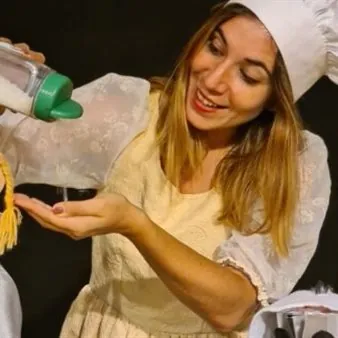

sab 24 ott · dalle 17:00
FILA A TEATRO 2026-2027 - XII edizione: Amore di sale
Sabato 24 ottobre 2026 – ore 17.00 ZOPPOLA (PN) – Teatro Comunale, via L. Da Vinci 1 AMORE DI SALE Arterie Teatro (Puglia) PRIMA REGIONALE Sapore = amore! Una cuoca alle prese con una minestra speciale. Gli aiutanti cuochi sono proprio i bambini, che con la fantasia assaggiano…
 Indicazioni
Indicazioni
- Costi e prenotazioni
- Costo non indicato · Prenotazione non indicata
- Programma
- Programma da verificare. Apri la fonte ufficiale per orari e possibili aggiornamenti.
- In caso di maltempo
- Nessuna indicazione specifica pubblicata.
- Note
- Acquisito automaticamente dalla fonte.
L’EVENTO
Descrizione completa
FILA A TEATRO 2026 – 2027
XII edizione, da ottobre 2026 a marzo 2027
Fila a Teatro prosegue il suo viaggio e approda nei teatri, e non solo, con 17 spettacoli per ragazzi e famiglie. Non mancano le proposte dedicate ai piccolissimi con 3 appuntamenti. In calendario 5 prime regionali, compagnie da diverse regioni italiane e giovani talenti, laboratori interattivi, eventi dedicati, incontri curiosi e tante sorprese…
Un progetto ricco e articolato, che consente di dare continuità agli obiettivi centrali della rassegna: allentare il confine attore-spettatore, offrire spettacoli di atmosfera e momenti di interazione per crescere, imparare, meravigliarsi e costruire insieme nuovi immaginari .
L’approccio inclusivo, volto a ricevere e ospitare persone che presentano specifiche fragilità, caratterizza questa parte della rassegna che nel teatro di Zoppola avvia l’esperienza dell’accoglienza per il pubblico “sensibile” nel segno della cultura del rispetto, della cura e dell’ascolto.
Sabato 24 ottobre 2026 – ore 17.00
ZOPPOLA (PN) – Teatro Comunale, via L. Da Vinci 1
AMORE DI SALE
Arterie Teatro (Puglia)
PRIMA REGIONALE
Sapore = amore!
Una cuoca alle prese con una minestra speciale. Gli aiutanti cuochi sono proprio i bambini, che con la fantasia assaggiano, aggiungono ingredienti e scoprono che ciò che da sapore alla minestra è proprio il sale!
Uno spettacolo per attrici e figure, con musiche di scena tratte dalle più celebri arie dell’Opera Lirica, in cui oggetti e utensili da cucina diventano personaggi di una storia che celebra la cultura italiana attraverso il bel canto, l’interregionalità dei sapori e la poetica della sostenibilità.
Fra pentole, piatti, mestoli e cucchiai di legno prendono vita i personaggi ispirati ad uno dei racconti di Fiabe Italiane di Italo Calvino.
Al termine dello spettacolo, laboratorio di costruzione dei personaggi con cucchiai di legno, lane e stoffe per tutti i bambini.
Regia e drammaturgia : Alessandra Sciancalepore
Costumi : Emanuela Sciancalepore
Scene : Leonardo Ventura
Età consigliata : 3+
Maggiori info, biglietti e promozioni su www.filaateatro.it
Scarica il programma completo
IL PROGRAMMA
Programma e orari
Appuntamenti raccolti dalle fonti elencate. Dove manca un orario, non è ancora disponibile in questa scheda.
Programma pubblicato
- Dal 2026-10-24 al 2026-10-24
INFORMAZIONI UTILI
Prima di partire
- Controllare la fonte prima di partire.
ORGANIZZAZIONE